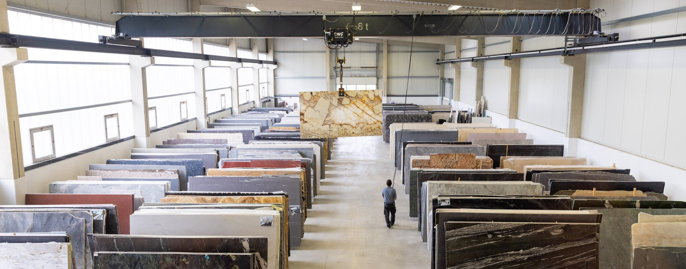
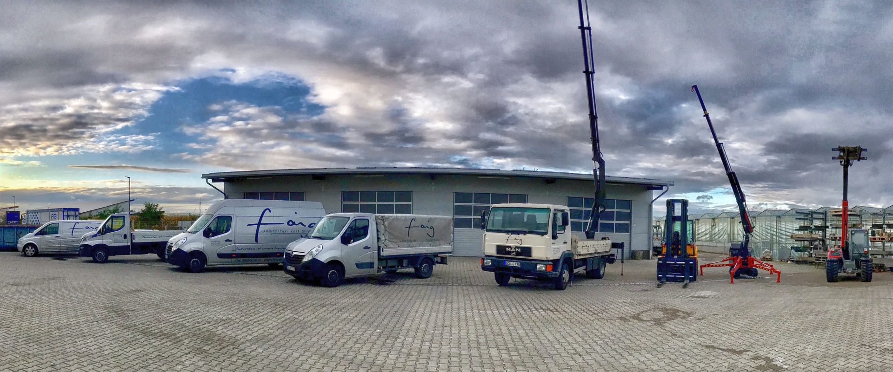

Waschtisch mit Rückwand aus Quarzit
Steinmetze seit 1860
Gestaltenmit Stein.
Bäder, Treppen und Küchen aus Naturstein. Geplant, auf eigenen CNC-Anlagen gefertigt und montiert vom Familienbetrieb Karl Faig in Rain am Lech, in fünfter Generation.
Seit 1860 arbeitet unsere Familie mit Naturstein. Heute in fünfter Generation, mit 280 Sorten im eigenen Lager und modernen CNC-Anlagen in Rain am Lech. Für Bäder, Treppen und Küchen, die ein Leben lang Freude machen.
Bäder aus Naturstein
Waschtischplatten, Wannen- und Badverkleidungen, Duschwände und Böden. Wir schneiden Wand, Boden und Waschtisch so aus den Rohplatten, dass die Maserung durch den Raum läuft.
Scrollen Sie weiter, um die Bäder zu sehen.


Treppen
Innen- und Außentreppen, Wendeltreppen und Treppenbeläge im Ein- und Mehrfamilienhaus. Jede Stufe wird nach Aufmaß gefertigt, Boden und Treppe kommen auf Wunsch aus demselben Stein.
Treppe anfragen

Küchen und Kamine
Arbeitsplatten, Inseln und Rückwände sind die am stärksten beanspruchten Flächen im Haus. Wir beraten, welcher Stein zu Ihrer Nutzung passt, und fertigen Ausschnitte für Spüle und Kochfeld millimetergenau.


Unser Leistungsbereich
- Wand-, Boden- und Treppenbeläge
- Waschtischplatten
- Kamin- und Badverkleidungen
- Küchenarbeitsplatten
- Fensterbänke
- Terrassen- und Balkonbeläge
- Außentreppen
- Grabmale, Brunnen und Findlinge

Den Stein vorher sehen
Im Materiallager in Rain am Lech wählen Sie Ihre Platte selbst aus. Naturstein aus nahezu allen Teilen der Welt, mit persönlicher Beratung.
- 280
- Sorten Naturstein
- 5.000 m²
- Rohsteinplatten
- 1.000 m²
- Ausstellungsfläche
Mo bis Do 8–12 und 13–17:30 Uhr, Fr 8–14 Uhr. Bitte vereinbaren Sie für die Beratung einen Termin.
Termin in der Ausstellung
Steinmetze seit 1860
Unsere Vorfahren haben mit Grabmalen und Steinbildhauerei begonnen. Heute führen Georg Faig und Andreas Wanninger den Betrieb in fünfter Generation, und der Schwerpunkt liegt auf dem Innenausbau.
Bei uns arbeiten Steinmetz- und Steinbildhauermeister zusammen mit Maschinenbauern, Schreinern und Anlagenmechanikern. Andere Gewerke koordinieren wir auf Wunsch mit Partnern aus der Region.
Beratung
In der Ausstellung, mit Steinmustern in der Hand.
Aufmaß und Planung
Wir messen vor Ort und planen jede Platte.
Fertigung
Zuschnitt und Bearbeitung auf modernen CNC-Anlagen.
Montage
Durch unsere eigenen Teams, termingerecht.
Projekte
Eine Auswahl aus Bädern, Treppen, Küchen und Wellnessbereichen. Weitere Arbeiten zeigen wir Ihnen gern in der Ausstellung.
Sprechen wir über Ihr Projekt
Rufen Sie an oder schreiben Sie uns, wir vereinbaren einen Termin in der Ausstellung. Auch außerhalb der Geschäftszeiten.
09090 2450 info@faig.de- Ausstellung, Produktion und Abholung
- Neuhofweg 10
86641 Rain am Lech - Anlieferung
- Salbeiweg 15, Gewerbegebiet Moosweide
86641 Rain am Lech - Öffnungszeiten
- Montag bis Donnerstag 8–12 und 13–17:30 Uhr
Freitag 8–14 Uhr